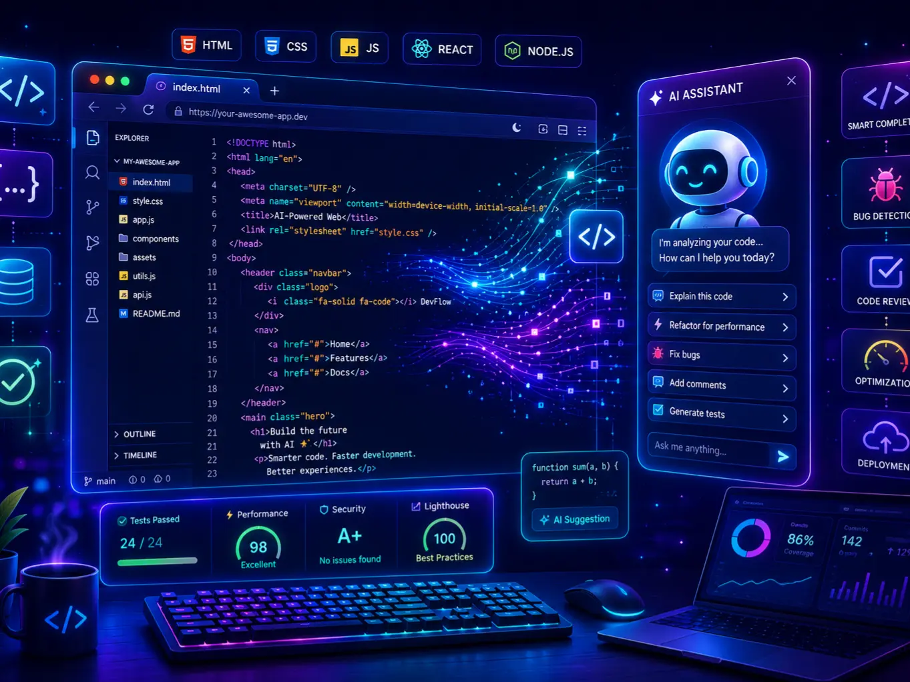

Industri pengembangan perangkat lunak mengalami perubahan signifikan sejak hadirnya alat bantu berbasis Artificial Intelligence. Proses yang dahulu sepenuhnya bergantung pada ketelitian manual seorang programmer kini dapat dipercepat dengan bantuan sistem yang mampu memahami konteks kode, memberikan saran, bahkan menulis sebagian fungsi secara otomatis. Bagi mahasiswa Teknik Informatika, fenomena ini terasa nyata setiap kali membuka Integrated Development Environment (IDE): asisten AI kini hadir berdampingan dengan editor kode, siap menawarkan potongan program hanya dari sebaris komentar atau nama fungsi yang baru diketik. Pergeseran kecil ini, jika diakumulasikan dalam skala proyek besar, berdampak signifikan pada keseluruhan siklus pengembangan.
Salah satu kontribusi paling terasa dari AI dalam pengembangan perangkat lunak adalah kemampuan code generation, yaitu proses menghasilkan kode program secara otomatis berdasarkan instruksi bahasa alami atau konteks kode yang sudah ada. Alat seperti GitHub Copilot memanfaatkan model bahasa besar yang dilatih dari jutaan baris kode publik untuk memberikan saran baris demi baris secara real-time. Sebuah eksperimen terkontrol menunjukkan bahwa programmer yang menggunakan asisten AI mampu menyelesaikan tugas pengembangan, seperti membangun HTTP server sederhana, sekitar 55,8% lebih cepat dibandingkan programmer yang bekerja tanpa bantuan AI (Peng et al., 2023). Temuan ini menegaskan bahwa code generation bukan sekadar gimmick, melainkan benar-benar mengubah kecepatan kerja di lapangan.
Namun, kecepatan ini perlu diimbangi dengan kebiasaan membaca dan memahami kode yang dihasilkan. Mahasiswa yang sekadar menerima saran tanpa memverifikasi logikanya berisiko kehilangan kesempatan belajar yang sebenarnya tersembunyi di balik proses debugging dan revisi kode.
Selain membantu menulis kode, AI juga berperan besar dalam bug detection dan software testing. Teknik klasik dalam kecerdasan buatan, seperti klasifikasi dan pengenalan pola, dapat dilatih untuk mengenali ciri-ciri kode yang berpotensi menimbulkan kesalahan berdasarkan riwayat proyek sebelumnya (Russell & Norvig, 2021).
Pendekatan ini sangat relevan bagi proyek perangkat lunak berskala besar, di mana jumlah baris kode bisa mencapai ratusan ribu hingga jutaan baris. Pengujian manual terhadap seluruh kemungkinan skenario menjadi hampir mustahil dilakukan oleh tim manusia saja. Di sinilah sistem berbasis AI membantu memprioritaskan bagian kode mana yang paling perlu diuji terlebih dahulu, sehingga waktu dan tenaga tim Quality Assurance dapat digunakan secara lebih efisien.
Bagi mahasiswa, memahami cara kerja automated testing berbasis AI menjadi bekal penting. Mata kuliah seperti Rekayasa Perangkat Lunak kini mulai memasukkan topik ini sebagai bagian dari kompetensi yang relevan dengan kebutuhan industri (Eaton & Epstein, 2024).
Penggunaan AI dalam pengembangan perangkat lunak membawa dampak nyata terhadap produktivitas. Studi menunjukkan bahwa peningkatan produktivitas tidak hanya terjadi pada level individu, tetapi juga pada level tim dan proyek secara keseluruhan, terutama untuk pekerjaan yang bersifat repetitif atau memiliki pola yang sudah dikenal (Peng et al., 2023).
Menariknya, peningkatan produktivitas ini tidak terjadi secara seragam. Programmer pemula justru cenderung mendapatkan manfaat yang lebih besar dibandingkan programmer senior, karena AI dapat membantu mereka mengatasi hambatan sintaksis dan mempercepat proses belajar pola-pola pemrograman umum (Peng et al., 2023). Bagi mahasiswa Teknik Informatika, hal ini membuka peluang sekaligus tantangan: peluang untuk mempercepat proses belajar, namun juga tantangan untuk memastikan pemahaman konsep tetap menjadi fondasi, bukan sekadar hasil akhir kode yang berjalan.
Di dunia industri, penerapan AI dalam pengembangan perangkat lunak sudah menjadi praktik umum. Perusahaan teknologi besar maupun startup kini mengintegrasikan asisten code generation ke dalam alur kerja standar mereka, mulai dari penulisan kode awal, peninjauan kode (code review), hingga penyusunan dokumentasi teknis.
Bagi mahasiswa Teknik Informatika UHAMKA, perkembangan ini bukan alasan untuk khawatir berlebihan, melainkan sinyal untuk mempersiapkan diri. Menguasai cara berkolaborasi dengan AI, yaitu memberi instruksi yang jelas, mengevaluasi hasil, serta memahami batasannya, kini menjadi bagian dari literasi teknologi yang setara pentingnya dengan menguasai bahasa pemrograman itu sendiri.
Eaton, E., & Epstein, S. L. (2024). Artificial intelligence in the CS2023 undergraduate computer science curriculum: Rationale and challenges. Proceedings of the AAAI Conference on Artificial Intelligence, 38(21), 23078–23083. https://doi.org/10.1609/aaai.v38i21.30352
Peng, S., Kalliamvakou, E., Cihon, P., & Demirer, M. (2023). The impact of AI on developer productivity: Evidence from GitHub Copilot. arXiv. https://doi.org/10.48550/arXiv.2302.06590
Russell, S. J., & Norvig, P. (2021). Artificial intelligence: A modern approach (4th ed.). Pearson.